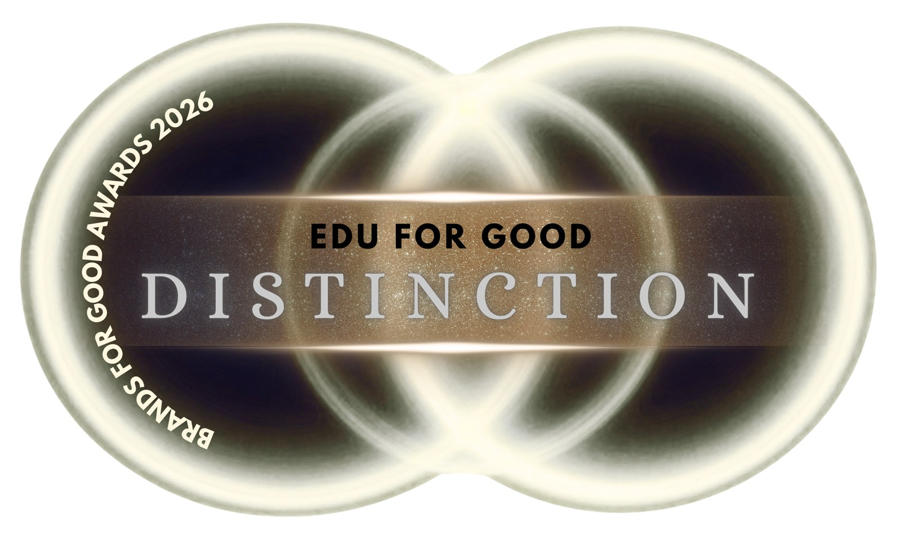

O Clube Amplexo Educação recebeu o reconhecimento internacional EDU FOR GOOD – Distinction, concedido pelo Brands For Good Awards 2026, em Singapura.
A premiação reconhece organizações que incorporam propósito às suas práticas e transformam seus valores em ações capazes de gerar impacto social, ambiental ou inclusivo. Na categoria EDU FOR GOOD, são destacadas iniciativas que utilizam a educação para tornar a aprendizagem mais acessível e transformadora, fortalecer comunidades e inspirar mudanças sociais duradouras.
De acordo com a comunicação oficial, a edição de 2026 reuniu mais de 110 marcas de mais de 25 países. A classificação Distinction reconhece organizações que demonstraram impacto relevante, inovação, efetividade e alinhamento com práticas responsáveis.
“Receber esta distinção não representa apenas uma conquista institucional. Ela reconhece uma história construída por alunos, famílias, professores, parceiros e profissionais que acreditam que a educação pode transformar vidas. Queremos que nossos estudantes alcancem resultados acadêmicos, mas, principalmente, que compreendam tudo o que podem fazer pelo mundo com aquilo que aprendem”, afirma Clarissa Vergara.

O reconhecimento também marca uma nova etapa da atuação institucional da Amplexo, que pretende ampliar iniciativas relacionadas à educação para o bem, ao protagonismo estudantil e à realização de projetos capazes de transformar conhecimento em impacto social.
Para a organização, educar para o bem significa não deixar talentos invisíveis, criar oportunidades reais e mobilizar famílias, educadores, especialistas, empresas e parceiros para que cada criança seja reconhecida e valorizada.
Com atenção especial às crianças e aos jovens que ainda encontram barreiras para desenvolver plenamente seu potencial, especialmente os estudantes neurodivergentes, que possuem formas singulares de pensar, aprender e compreender o mundo. Quando encontram acolhimento, incentivo, suporte adequado e oportunidades reais, podem transformar suas ideias e talentos em iniciativas relevantes, capazes de gerar impacto positivo na sociedade.
“Estamos transformando este reconhecimento em um compromisso educacional ainda mais concreto. Queremos ampliar o apoio a projetos que nascem das ideias dos nossos estudantes, fortalecer iniciativas orientadas por propósito e olhar com intencionalidade para o impacto que a educação pode gerar para além da sala de aula. Mais do que celebrar uma conquista, queremos fazer dela um ponto de partida para novas oportunidades, ações consistentes e transformações reais na vida das pessoas e das comunidades”, completa Clarissa.
Sobre o Brands For Good Awards
O Brands For Good Awards reconhece marcas e lideranças orientadas por valores e propósito. A premiação contempla as categorias Business for Good, Tech for Good, Culture for Good, Leadership for Good e Edu for Good. As organizações passam por triagem de elegibilidade e avaliação de um painel independente, que considera propósito, impacto positivo, inovação e compromisso com o crescimento responsável.
Sobre o Clube Amplexo Educação
O Clube Amplexo Educação é um clube de enriquecimento curricular voltado ao desenvolvimento cognitivo, acadêmico, emocional e social de crianças e jovens. A instituição desenvolve projetos pedagógicos que valorizam a curiosidade, o protagonismo e as diferentes formas de aprender, sempre com um olhar atento à inclusão.
Sua metodologia reúne aulas ao vivo, materiais próprios, projetos práticos, acompanhamento pedagógico e suporte às famílias, valorizando tanto as conquistas acadêmicas quanto o desenvolvimento da autonomia, da curiosidade e da responsabilidade social dos estudantes.
← Voltar para o Jornal Amplexo